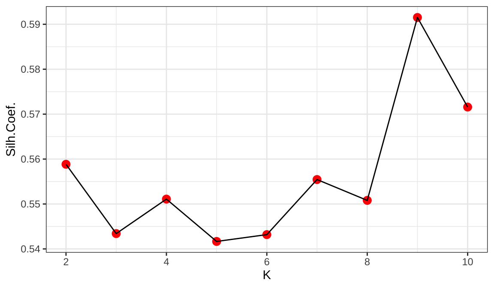

第 8 章 回归
8.1 有序glm
Code
library(haven)
library(tidyverse)
library("MASS")
df<-read_dta("data/CGSS2010.dta")
ndf=df %>% dplyr::select(a36,a285,a3a,a2,a15,a18,a8a,a5,a7a,a10,a69,a681,a682,a65,a611,a612)
aa=ndf %>% reframe(happiness=ordered(ifelse(a36>0,a36,NA)),
internet=ifelse(a285>0,a285,NA),
age=ifelse(a3a<0,NA,2010-a3a),
gender=ifelse(a2==1,1,ifelse(a2==2,0,NA)),
health=ifelse(a15>0,a15,NA),
hukou=ifelse(a18==1,0,ifelse(a18==2,1,NA)),
ininc=ifelse(a8a>9999995|a8a==0,NA,log(a8a)),
rel=ifelse(a5==1,0,ifelse(a5>1,1,NA)),
edu=ifelse(a7a<0,NA,a7a),
pol=ifelse(a10<0,NA,ifelse(a10==1,1,0)),
mar=ifelse(a69<0,NA,ifelse(a69%in%c(1,2,5,6),0,1)),
kid=ifelse((a681+a682)<0,NA,ifelse((a681+a682)==0,0,1)),
hou=ifelse(a65<0,NA,a65),
med=ifelse(a611==1,1,ifelse(a611==2,0,NA)),
end=ifelse(a612==1,1,ifelse(a612==2,0,NA)))
fo=paste0(names(aa)[1],"~",paste0(names(aa)[-1],collapse = "+"))
aa=na.omit(aa)
mod_oglm1=polr(happiness ~internet, Hess=TRUE,method = c("logistic"),data = aa)
mod_oglm2=polr(fo, Hess=TRUE,method = c("logistic"),data = aa)
mod_oprob1=polr(happiness ~internet,
Hess=TRUE,method = c("probit"),
data = aa)
mod_oprob2=polr(fo,Hess=TRUE,method = c("probit"),data = aa)
summary(mod_oglm1)## Call:
## polr(formula = happiness ~ internet, data = aa, Hess = TRUE,
## method = c("logistic"))
##
## Coefficients:
## Value Std. Error t value
## internet 0.108 0.0155 6.98
##
## Intercepts:
## Value Std. Error t value
## 1|2 -3.675 0.082 -44.606
## 2|3 -2.072 0.047 -44.477
## 3|4 -0.821 0.038 -21.847
## 4|5 1.861 0.043 43.190
##
## Residual Deviance: 19357.50
## AIC: 19367.50## Call:
## polr(formula = fo, data = aa, Hess = TRUE, method = c("logistic"))
##
## Coefficients:
## Value Std. Error t value
## internet 0.0564 0.02248 2.5104
## age 0.0243 0.00203 11.9454
## gender -0.3101 0.04567 -6.7899
## health 0.4633 0.02235 20.7282
## hukou -0.1823 0.05987 -3.0444
## ininc 0.2114 0.02483 8.5170
## rel 0.2569 0.06791 3.7832
## edu 0.0008 0.01162 0.0688
## pol 0.3066 0.06958 4.4068
## mar 0.5846 0.07023 8.3243
## kid -0.3430 0.09898 -3.4655
## hou 0.2020 0.04114 4.9094
## med 0.3909 0.07149 5.4683
## end 0.0975 0.05121 1.9040
##
## Intercepts:
## Value Std. Error t value
## 1|2 1.434 0.265 5.409
## 2|3 3.090 0.258 11.965
## 3|4 4.424 0.260 17.045
## 4|5 7.328 0.269 27.257
##
## Residual Deviance: 18482.22
## AIC: 18518.22## Call:
## polr(formula = happiness ~ internet, data = aa, Hess = TRUE,
## method = c("probit"))
##
## Coefficients:
## Value Std. Error t value
## internet 0.064 0.00885 7.23
##
## Intercepts:
## Value Std. Error t value
## 1|2 -1.936 0.035 -55.365
## 2|3 -1.205 0.025 -48.905
## 3|4 -0.511 0.022 -23.391
## 4|5 1.112 0.024 46.887
##
## Residual Deviance: 19354.02
## AIC: 19364.02## Call:
## polr(formula = fo, data = aa, Hess = TRUE, method = c("probit"))
##
## Coefficients:
## Value Std. Error t value
## internet 0.03531 0.01273 2.774
## age 0.01353 0.00114 11.904
## gender -0.17445 0.02580 -6.761
## health 0.25629 0.01229 20.851
## hukou -0.10082 0.03353 -3.007
## ininc 0.11831 0.01393 8.493
## rel 0.15147 0.03751 4.038
## edu 0.00097 0.00662 0.146
## pol 0.18216 0.03987 4.568
## mar 0.31141 0.03903 7.979
## kid -0.16593 0.05518 -3.007
## hou 0.11223 0.02325 4.828
## med 0.21133 0.04017 5.262
## end 0.05116 0.02878 1.777
##
## Intercepts:
## Value Std. Error t value
## 1|2 0.881 0.145 6.074
## 2|3 1.674 0.144 11.610
## 3|4 2.421 0.145 16.694
## 4|5 4.145 0.148 27.953
##
## Residual Deviance: 18478.40
## AIC: 18514.40##
## ==========================================
## Dependent variable:
## -----------------------------
## happiness
## ordered ordered
## logistic probit
## (1) (2) (3)
## ------------------------------------------
## internet 0.108*** 0.056** 0.064***
## (0.016) (0.022) (0.009)
##
## age 0.024***
## (0.002)
##
## gender -0.310***
## (0.046)
##
## health 0.463***
## (0.022)
##
## hukou -0.182***
## (0.060)
##
## ininc 0.211***
## (0.025)
##
## rel 0.257***
## (0.068)
##
## edu 0.001
## (0.012)
##
## pol 0.307***
## (0.070)
##
## mar 0.585***
## (0.070)
##
## kid -0.343***
## (0.099)
##
## hou 0.202***
## (0.041)
##
## med 0.391***
## (0.071)
##
## end 0.098*
## (0.051)
##
## ------------------------------------------
## Observations 8,178 8,178 8,178
## ==========================================
## Note: *p<0.1; **p<0.05; ***p<0.01##
## ==================================================
## Dependent variable:
## -------------------------------------
## happiness
## ordered ordered
## logistic probit
## (1) (2) (3) (4)
## --------------------------------------------------
## internet 0.108*** 0.056** 0.064*** 0.035***
## (0.016) (0.022) (0.009) (0.013)
##
## age 0.024*** 0.014***
## (0.002) (0.001)
##
## gender -0.310*** -0.174***
## (0.046) (0.026)
##
## health 0.463*** 0.256***
## (0.022) (0.012)
##
## hukou -0.182*** -0.101***
## (0.060) (0.034)
##
## ininc 0.211*** 0.118***
## (0.025) (0.014)
##
## rel 0.257*** 0.151***
## (0.068) (0.038)
##
## edu 0.001 0.001
## (0.012) (0.007)
##
## pol 0.307*** 0.182***
## (0.070) (0.040)
##
## mar 0.585*** 0.311***
## (0.070) (0.039)
##
## kid -0.343*** -0.166***
## (0.099) (0.055)
##
## hou 0.202*** 0.112***
## (0.041) (0.023)
##
## med 0.391*** 0.211***
## (0.071) (0.040)
##
## end 0.098* 0.051*
## (0.051) (0.029)
##
## --------------------------------------------------
## Observations 8,178 8,178 8,178 8,178
## ==================================================
## Note: *p<0.1; **p<0.05; ***p<0.01Code
cs=aa %>% filter(hukou==1) %>% dplyr::select(-hukou)
nc=aa %>% filter(hukou==0) %>% dplyr::select(-hukou)
fo2=paste0(names(cs)[1],"~",paste0(names(cs)[-1],collapse = "+"))
mod_oglm1=polr(fo2, Hess=TRUE,method = c("logistic"),data = cs)
mod_oglm2=polr(fo2, Hess=TRUE,method = c("logistic"),data = nc)
mod_oprob1=polr(fo2,
Hess=TRUE,method = c("probit"),
data = cs)
mod_oprob2=polr(fo2,Hess=TRUE,method = c("probit"),data = nc)
summary(mod_oglm1)## Call:
## polr(formula = fo2, data = cs, Hess = TRUE, method = c("logistic"))
##
## Coefficients:
## Value Std. Error t value
## internet 0.0417 0.02933 1.42
## age 0.0222 0.00303 7.35
## gender -0.2946 0.06769 -4.35
## health 0.4727 0.03486 13.56
## ininc 0.3418 0.04356 7.85
## rel 0.5365 0.10831 4.95
## edu -0.0161 0.01459 -1.10
## pol 0.3545 0.08482 4.18
## mar 0.6178 0.09555 6.47
## kid -0.3646 0.13381 -2.72
## hou 0.1231 0.05591 2.20
## med 0.6453 0.10583 6.10
## end -0.1286 0.07943 -1.62
##
## Intercepts:
## Value Std. Error t value
## 1|2 2.473 0.445 5.560
## 2|3 4.216 0.432 9.752
## 3|4 5.660 0.435 13.012
## 4|5 8.692 0.450 19.295
##
## Residual Deviance: 8146.43
## AIC: 8180.43## Call:
## polr(formula = fo2, data = nc, Hess = TRUE, method = c("logistic"))
##
## Coefficients:
## Value Std. Error t value
## internet 0.0691 0.03774 1.831
## age 0.0254 0.00289 8.806
## gender -0.3287 0.06345 -5.181
## health 0.4606 0.02925 15.743
## ininc 0.1489 0.03233 4.606
## rel 0.0775 0.08685 0.892
## edu 0.0273 0.02143 1.273
## pol 0.2036 0.13000 1.567
## mar 0.5993 0.10556 5.677
## kid -0.3142 0.14913 -2.107
## hou 0.2921 0.06200 4.712
## med 0.2177 0.10004 2.176
## end 0.2493 0.06811 3.660
##
## Intercepts:
## Value Std. Error t value
## 1|2 1.152 0.366 3.146
## 2|3 2.765 0.359 7.699
## 3|4 4.035 0.361 11.191
## 4|5 6.855 0.372 18.446
##
## Residual Deviance: 10274.95
## AIC: 10308.95## Call:
## polr(formula = fo2, data = cs, Hess = TRUE, method = c("probit"))
##
## Coefficients:
## Value Std. Error t value
## internet 0.02584 0.01657 1.56
## age 0.01221 0.00170 7.19
## gender -0.16188 0.03806 -4.25
## health 0.26316 0.01925 13.67
## ininc 0.18337 0.02403 7.63
## rel 0.28859 0.05917 4.88
## edu -0.00845 0.00826 -1.02
## pol 0.21078 0.04821 4.37
## mar 0.32942 0.05292 6.22
## kid -0.18386 0.07499 -2.45
## hou 0.07199 0.03163 2.28
## med 0.34230 0.05902 5.80
## end -0.06990 0.04452 -1.57
##
## Intercepts:
## Value Std. Error t value
## 1|2 1.430 0.239 5.984
## 2|3 2.234 0.237 9.415
## 3|4 3.024 0.239 12.664
## 4|5 4.820 0.244 19.728
##
## Residual Deviance: 8153.25
## AIC: 8187.25## Call:
## polr(formula = fo2, data = nc, Hess = TRUE, method = c("probit"))
##
## Coefficients:
## Value Std. Error t value
## internet 0.0441 0.02130 2.07
## age 0.0144 0.00161 8.94
## gender -0.1900 0.03605 -5.27
## health 0.2535 0.01606 15.78
## ininc 0.0885 0.01834 4.83
## rel 0.0600 0.04861 1.23
## edu 0.0166 0.01225 1.35
## pol 0.1240 0.07476 1.66
## mar 0.3151 0.05841 5.39
## kid -0.1441 0.08228 -1.75
## hou 0.1566 0.03475 4.51
## med 0.1259 0.05650 2.23
## end 0.1313 0.03839 3.42
##
## Intercepts:
## Value Std. Error t value
## 1|2 0.753 0.203 3.706
## 2|3 1.543 0.203 7.615
## 3|4 2.263 0.204 11.122
## 4|5 3.937 0.207 18.986
##
## Residual Deviance: 10272.32
## AIC: 10306.32Code
##
## ====================================================
## Dependent variable:
## ---------------------------------------
## happiness
## ordered ordered
## logistic probit
## 城镇 农村 城镇 农村
## (1) (2) (3) (4)
## ----------------------------------------------------
## internet 0.042 0.069* 0.026 0.044**
## (0.029) (0.038) (0.017) (0.021)
##
## age 0.022*** 0.025*** 0.012*** 0.014***
## (0.003) (0.003) (0.002) (0.002)
##
## gender -0.295*** -0.329*** -0.162*** -0.190***
## (0.068) (0.063) (0.038) (0.036)
##
## health 0.473*** 0.461*** 0.263*** 0.253***
## (0.035) (0.029) (0.019) (0.016)
##
## ininc 0.342*** 0.149*** 0.183*** 0.089***
## (0.044) (0.032) (0.024) (0.018)
##
## rel 0.536*** 0.077 0.289*** 0.060
## (0.108) (0.087) (0.059) (0.049)
##
## edu -0.016 0.027 -0.008 0.017
## (0.015) (0.021) (0.008) (0.012)
##
## pol 0.355*** 0.204 0.211*** 0.124*
## (0.085) (0.130) (0.048) (0.075)
##
## mar 0.618*** 0.599*** 0.329*** 0.315***
## (0.096) (0.106) (0.053) (0.058)
##
## kid -0.365*** -0.314** -0.184** -0.144*
## (0.134) (0.149) (0.075) (0.082)
##
## hou 0.123** 0.292*** 0.072** 0.157***
## (0.056) (0.062) (0.032) (0.035)
##
## med 0.645*** 0.218** 0.342*** 0.126**
## (0.106) (0.100) (0.059) (0.057)
##
## end -0.129 0.249*** -0.070 0.131***
## (0.079) (0.068) (0.045) (0.038)
##
## ----------------------------------------------------
## Observations 3,789 4,389 3,789 4,389
## ====================================================
## Note: *p<0.1; **p<0.05; ***p<0.018.2 药物浓度拟合参数方程
Code

\[y=log(c)+(b-1)*log(\frac{x}{a})-(x/a)^b\]
Code
##
## Formula: y ~ log(c) + (b - 1) * log(x/a) - (x/a)^b
##
## Parameters:
## Estimate Std. Error t value Pr(>|t|)
## c 15.4162 1.0988 14.0 <2e-16 ***
## a 9.7896 0.2607 37.6 <2e-16 ***
## b 1.7001 0.0397 42.8 <2e-16 ***
## ---
## Signif. codes:
## 0 '***' 0.001 '**' 0.01 '*' 0.05 '.' 0.1 ' ' 1
##
## Residual standard error: 0.297 on 47 degrees of freedom
##
## Number of iterations to convergence: 9
## Achieved convergence tolerance: 1.19e-06Code

8.3 多余变量
Code
Code
ind=c('p6b5','p6b10', 'p6b35', 'p6b55', 'p6b60', 'p6c21', 'p6f32', 'p6f35', 'p6h74', 'p6h102', 'p6i7', 'p6i8', 'p6i11', 'p6j37', 'k6b21a', 'k6b22a', 'k6c1', 'k6c4e', 'k6c28', 'k6d37', 'k6f63', 'ck6cbmi', 'k6d10')
mydata=FF_wave6_2020v2[,ind]
# mydata=lapply(mydata,as.numeric)
# mydata=as.data.frame(mydata)
mydata[mydata<0]=NA
new=na.omit(mydata)
dim(new)## [1] 488 238.3.1 后退法
Code
## (Intercept) p6b55 p6b10 k6b21a
## -4.04029 1.49803 -1.78293 0.74077
## p6f32 p6c21 p6j37 k6c4e
## -0.59864 0.86352 -0.76027 0.53427
## ck6cbmi
## 0.04254##
## Call:
## glm(formula = Depression ~ p6b55 + p6b10 + k6b21a + p6f32 + p6c21 +
## p6j37 + k6c4e + ck6cbmi, family = "binomial", data = new)
##
## Deviance Residuals:
## Min 1Q Median 3Q Max
## -2.120 -0.408 -0.290 -0.207 3.008
##
## Coefficients:
## Estimate Std. Error z value Pr(>|z|)
## (Intercept) -4.0403 1.9312 -2.09 0.0364 *
## p6b55 1.4980 0.2533 5.91 3.3e-09 ***
## p6b10 -1.7829 0.4517 -3.95 7.9e-05 ***
## k6b21a 0.7408 0.2337 3.17 0.0015 **
## p6f32 -0.5986 0.3881 -1.54 0.1229
## p6c21 0.8635 0.4293 2.01 0.0443 *
## p6j37 -0.7603 0.4258 -1.79 0.0742 .
## k6c4e 0.5343 0.3017 1.77 0.0765 .
## ck6cbmi 0.0425 0.0245 1.74 0.0819 .
## ---
## Signif. codes:
## 0 '***' 0.001 '**' 0.01 '*' 0.05 '.' 0.1 ' ' 1
##
## (Dispersion parameter for binomial family taken to be 1)
##
## Null deviance: 347.79 on 487 degrees of freedom
## Residual deviance: 253.42 on 479 degrees of freedom
## AIC: 271.4
##
## Number of Fisher Scoring iterations: 6Code
CI=confint(model_selected)
d=CI[CI[,1]>0,]
data.frame(name=rownames(d),low=d[,1],upr=d[,2],estimate=rowMeans(d)) %>%
group_by(name)%>%
ggplot(mapping=aes(y=estimate, x=name)) +
geom_point() +
geom_errorbar(aes(ymin = low, ymax = upr), width=.4,col='red')+
labs(title="A coefficient greater than zero and its confidence interval",
y="estimate",
x="Figure 1: Estimate")
8.3.2 lasso
Code
## [1] 22 68Code

Code
## 23 x 1 sparse Matrix of class "dgCMatrix"
## s1
## (Intercept) -1.94241
## p6b10 -1.05411
## p6b35 .
## p6b55 1.13370
## p6b60 .
## p6c21 .
## p6f32 -0.12648
## p6f35 .
## p6h74 -0.04463
## p6h102 .
## p6i7 .
## p6i8 .
## p6i11 .
## p6j37 -0.18554
## k6b21a 0.40028
## k6b22a .
## k6c1 .
## k6c4e .
## k6c28 .
## k6d37 .
## k6f63 .
## ck6cbmi .
## k6d10 .- The coefficients obtained with the Lasso procedure are similar to the coefficients obtained with the forward procedure, but there are some differences. The Lasso tends to shrink coefficients towards zero, which can result in some coefficients being set to zero even if they were significant in the forward procedure.
8.3.3 偏最小二乘
Code
## Importance of components:
## PC1 PC2 PC3 PC4 PC5
## Standard deviation 1.644 1.415 0.945 0.8167 0.5646
## Proportion of Variance 0.386 0.286 0.128 0.0953 0.0455
## Cumulative Proportion 0.386 0.672 0.800 0.8950 0.9406
## PC6 PC7
## Standard deviation 0.4796 0.4314
## Proportion of Variance 0.0328 0.0266
## Cumulative Proportion 0.9734 1.0000## [1] 0.3861 0.6722 0.7998 0.8950 0.9406 0.9734 1.0000Code

Code

Code
##
## Call:
## lm(formula = y ~ ., data = train)
##
## Residuals:
## Min 1Q Median 3Q Max
## -2.4387 -0.3243 0.0846 0.3825 1.5888
##
## Coefficients:
## Estimate Std. Error t value Pr(>|t|)
## (Intercept) -0.0015 0.0594 -0.03 0.980
## PC1 -0.3388 0.0364 -9.31 1.2e-15 ***
## PC2 0.4209 0.0445 9.46 5.4e-16 ***
## PC3 -0.1892 0.0623 -3.04 0.003 **
## ---
## Signif. codes:
## 0 '***' 0.001 '**' 0.01 '*' 0.05 '.' 0.1 ' ' 1
##
## Residual standard error: 0.64 on 113 degrees of freedom
## Multiple R-squared: 0.604, Adjusted R-squared: 0.594
## F-statistic: 57.5 on 3 and 113 DF, p-value: <2e-16## (Intercept) PC1 PC2 PC3
## -0.001503 -0.338799 0.420850 -0.189184Code

## [1] 30.27## [1] 0.7703Code
## (Intercept)
## -324.45790 1.59843 -0.01102 7.75341
##
## 0.05608 -1.46149 41.60263 0.05822## (Intercept)
## 221.6Code
## Data: X dimension: 117 7
## Y dimension: 117 1
## Fit method: widekernelpls
## Number of components considered: 7
##
## VALIDATION: RMSEP
## Cross-validated using 117 leave-one-out segments.
## (Intercept) 1 comps 2 comps 3 comps 4 comps
## CV 1.009 0.6392 0.5881 0.5468 0.5361
## adjCV 1.009 0.6391 0.5880 0.5467 0.5360
## 5 comps 6 comps 7 comps
## CV 0.5343 0.5373 0.5378
## adjCV 0.5341 0.5372 0.5376
##
## TRAINING: % variance explained
## 1 comps 2 comps 3 comps 4 comps 5 comps
## X 34.20 65.64 76.99 86.97 94.35
## scod 61.72 68.49 73.72 74.91 75.22
## 6 comps 7 comps
## X 98.05 100.00
## scod 75.22 75.22## , , 5 comps
##
## scod
## NH 0.42900
## flow 0.10748
## po4 0.46516
## ss 0.06142
## temp -0.41347
## Ph -0.20848
## cond 0.28241Code

## Data: X dimension: 168 7
## Y dimension: 168 1
## Fit method: kernelpls
## Number of components considered: 5
##
## VALIDATION: RMSEP
## Cross-validated using 168 leave-one-out segments.
## (Intercept) 1 comps 2 comps 3 comps 4 comps
## CV 1.003 0.672 0.6310 0.6027 0.5918
## adjCV 1.003 0.672 0.6309 0.6027 0.5917
## 5 comps
## CV 0.5900
## adjCV 0.5899
##
## TRAINING: % variance explained
## 1 comps 2 comps 3 comps 4 comps 5 comps
## X 34.14 60.21 76.09 82.90 92.77
## scod 56.95 63.08 66.90 68.76 68.92## 1 2 3 9 10
## 1.789077 1.847178 1.439600 0.783259 0.822152
## 15 18 19 20 28
## 0.504052 0.287674 0.208961 0.661821 0.120597
## 29 33 45 48 49
## -0.330300 -0.003067 -0.420008 -0.604028 0.178544
## 56 57 58 59 61
## 2.221033 1.837313 0.356347 0.503241 0.297697
## 66 70 73 77 80
## 0.405937 0.286347 -0.220258 0.438075 0.323224
## 82 85 88 93 96
## 0.140048 -0.287251 -0.652196 -0.473903 -0.951519
## 98 100 104 105 110
## -0.158494 0.592749 0.499284 0.131835 -0.271080
## 112 113 119 120 122
## 0.216270 0.189855 0.223635 0.373624 -0.682756
## 125 127 128 130 136
## -1.701492 -1.265795 -1.431167 -1.898188 -1.584910
## 142 147 148 150 155
## -1.685985 0.520509 0.784047 0.710252 0.069777
## 162
## 0.109711Code

## [1] 21.97## [1] 0.6563Code
## [1] 508.325179 1.409096 0.005195 13.170441
## [5] 0.011127 -15.633216 -39.297392 0.038004## [1] 212.7## # A tibble: 1 × 1
## scod
## <dbl>
## 1 212Code
## [1] 0.5569